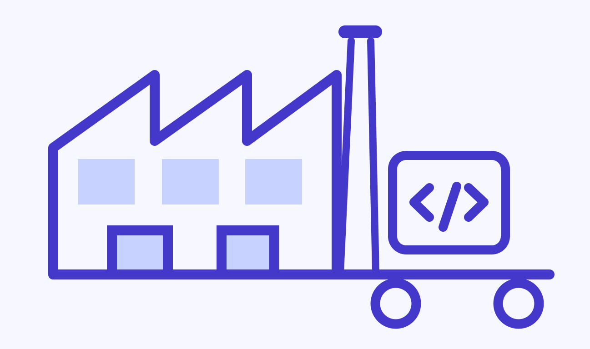

Blog
The Software Factory
A practical blueprint for turning ideas into reliable, production-ready software.

What is a software factory?
A software factory is a standardized, largely automated way of producing software: a repeatable pipeline of tooling, practices and quality checks that turns requirements into tested, deployable software, much like a factory turns raw materials into finished products.